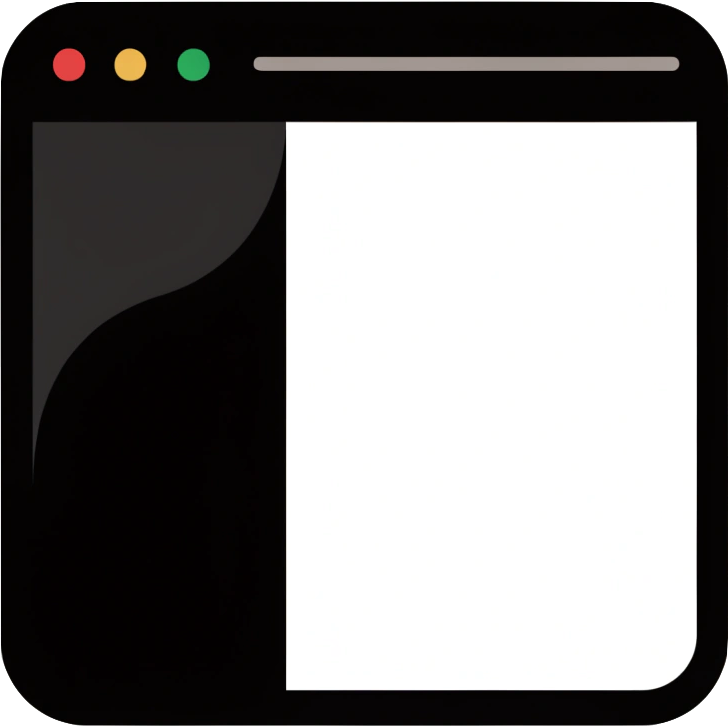

Revitalizing the Downtown Tech Corridor
Executive Summary
The downtown corridor that once anchored the city's technology sector has thinned out over the past decade. Anchor tenants relocated to suburban campuses, ground-floor retail emptied, and the evening foot traffic that sustains a healthy district largely disappeared. This study proposes a phased revitalization that treats the corridor not as office stock to be re-let, but as a living neighbourhood to be re-knit.
Our central recommendation is to study Berlin's Mitte and Friedrichshain districts as working models. Both transformed from underused, post-industrial zones into dense, mixed-use technology neighbourhoods within a single generation — without erasing the texture that made them worth visiting in the first place.
Why Berlin
Berlin is the clearest example of a city that grew a technology corridor by addition rather than demolition. Startups colonised former factories, courtyards, and bathhouses; the resulting density of cafés, studios, and small venues is exactly the "after hours" vitality our downtown lacks. A field visit is scheduled to walk the relevant districts and meet the planners who guided the change.
The site visit spans four neighbourhoods — Mitte, Friedrichshain, Charlottenburg, and Prenzlauer Berg — chosen because each solved a different piece of the puzzle: civic anchoring, nightlife-led density, west-side commercial reinvention, and adaptive reuse of historic stock respectively. Lodging is being gathered close to each so the team can experience the districts directly rather than commuting in.
Design Principles
Three principles guide the corridor plan. First, continuity: the street should never go dark. A district that empties at 6pm cannot recover, so ground floors must mix uses that keep light and movement on the pavement into the evening.
Second, proximity: the things people need should live physically close together. Housing, work, food, and transit within a short walk is what lets a neighbourhood sustain itself without forcing every trip into a car.
Third, legibility: the corridor should communicate what it is at a glance. A visitor stepping off the train should be able to read the district — where to eat, where to work, where to stay — without a map, because the built form makes it obvious.
Open Questions
Several decisions remain unresolved and will be tested against what we observe on the ground. How much parking can be removed before retail suffers, versus how much must go to make the street walkable? Should incentives target large anchor tenants, or a larger number of small ones? And how do we stage construction so the corridor stays open for business throughout?
The anchor-tenant question is the most consequential and the most fraught. A single large employer can revive a district overnight — and hollow it out just as fast if it leaves. A spread of smaller tenants is slower to assemble but far more resilient. Berlin leaned toward the latter, and that choice is worth examining closely.
Next Steps
Finalise the Berlin itinerary and confirm lodging in each of the four districts, then conduct the walking study with the local planning office. A follow-on report will translate the observations into a concrete, phased proposal for the downtown corridor, with cost estimates and a staging plan that keeps the street alive while the work proceeds.
| A | B | C | |
|---|---|---|---|
| 1 | Phase | Item | Cost |
| 2 | Phase 1 — Baseline | 3D window engine | $18,000 |
| 3 | Phase 2 — Spatial | Snap zones + parking | $12,500 |
| 4 | Phase 3 — Bridge | Clipboard ↔ filesystem | $14,200 |
| 5 | Phase 3 — Bridge | User testing | $6,800 |
| 6 | Total | $51,500 |
Hotel Adlon Kempinski
If you only know one Berlin hotel, it's this one. The Adlon has stood beside the Brandenburg Gate since 1907, and the location is unbeatable — you step out of the lobby and onto Pariser Platz, with Unter den Linden stretching east toward Museum Island. Rooms are classically grand, the afternoon tea is an institution, and the front rooms look straight onto the Gate.
Address: Unter den Linden 77, 10117 Berlin (Mitte)
Phone: +49 30 22610
From €420/night
Review (★ 4.7): "Old-world grandeur done right. Worth a front-facing room for the view of the Gate — you won't get closer. Service was flawless and the afternoon tea lived up to the legend."
Michelberger Hotel
Playful, design-forward, and very Berlin — a former factory turned hotel with a leafy courtyard, a great bar, and the U1 line right outside. Walkable to the river and the Friedrichshain clubs.
Address: Warschauer Str. 39–40, 10243 Berlin (Friedrichshain)
Phone: +49 30 29778590
From €145/night
Review (★ 4.5): "Quirky in the best way — the courtyard bar is a scene and the staff are genuinely fun. Rooms are compact but full of character. Perfect base for a night out in the east."
25hours Hotel Bikini Berlin
West Berlin with a view — the "jungle" rooms look straight into the zoo, and the Monkey Bar on the roof has the best sunset over the Gedächtniskirche. Handy for the conference venue.
Address: Budapester Str. 40, 10787 Berlin (Charlottenburg)
Phone: +49 30 1202210
From €190/night
Review (★ 4.6): "The rooftop bar alone is worth the stay. Ask for a zoo-facing room — waking up to the Tiergarten is unreal. A short walk to KaDeWe and the Ku'damm shops."
Hotel Oderberger
A boutique stay built into a restored 19th-century public bathhouse — you can swim in the original pool hall. Quiet, tree-lined neighbourhood full of cafés, an easy tram ride from Mitte.
Address: Oderberger Str. 57, 10435 Berlin (Prenzlauer Berg)
Phone: +49 30 780089760
From €165/night
Review (★ 4.6): "Swimming in that restored Victorian pool hall is a once-in-a-trip experience. The neighbourhood is calm and full of good coffee. Rooms are tasteful and quiet — a lovely escape from the centre."

Tech Corridor Studyfor every kind of trip